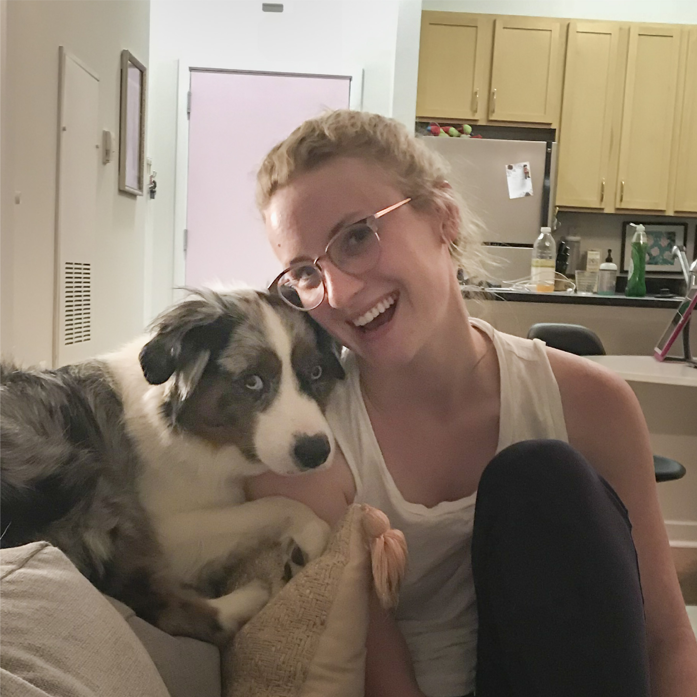

<!DOCTYPE html>
<html>
</html>
<head>
  <meta charset="utf-8">
  <meta http-equiv="X-UA-Compatible" content="IE=edge">
  <title>Sarah Fawson</title>
  <meta name="description" content="">
  <meta name="viewport" content="width=device-width, initial-scale=1">
  <meta name="robots" content="all,follow">
  <!-- Bootstrap CSS-->
  <link rel="stylesheet" href="vendor/bootstrap/css/bootstrap.min.css">
  <!-- Font Awesome CSS-->
  <link rel="stylesheet" href="vendor/font-awesome/css/font-awesome.min.css">
  <!-- Google fonts - Roboto-->
  <link rel="stylesheet" href="https://fonts.googleapis.com/css?family=Roboto:400,300,700,400italic">
  <!-- owl carousel-->
  <link rel="stylesheet" href="vendor/owl.carousel/assets/owl.carousel.css">
  <link rel="stylesheet" href="vendor/owl.carousel/assets/owl.theme.default.css">
  <!-- theme stylesheet-->
  <link rel="stylesheet" href="css/style.default.css" id="theme-stylesheet">
  <!-- Custom stylesheet - for your changes-->
  <link rel="stylesheet" href="css/custom.css">
  <!-- Favicon-->
  <link rel="icon" type="image/png" href="static/Images/favicon.png">
  <!-- Tweaks for older IEs--><!--[if lt IE 9]>
    <script src="https://oss.maxcdn.com/html5shiv/3.7.3/html5shiv.min.js"></script>
    <script src="https://oss.maxcdn.com/respond/1.4.2/respond.min.js"></script><![endif]-->
</head>
<body>
  <div id="all">
    <div class="container-fluid">
      <div class="row row-offcanvas row-offcanvas-left"> 
        <!--   *** SIDEBAR ***-->
        <div id="sidebar" class="col-md-4 col-lg-3 sidebar-offcanvas">
          <div class="sidebar-content">
            <h1 class="sidebar-heading"> <a href="index.html">Sarah Fawson</a></h1>
            <!-- <p class="sidebar-p">Data Visualization Designer and Illustrator.</p> -->
            <p class="sidebar-p">Originally from Texas, currently based in DC. </p>
            <ul class="sidebar-menu">
                <!-- Links-->
                <li class="sidebar-item"><a href="index.html" class="sidebar-link">Home</a></li>
                <li class="sidebar-item"><a href="about.html" class="sidebar-link active">About</a></li>
                <li class="sidebar-item"><a href="contact.html" class="sidebar-link">Get in touch</a></li>
            </ul>
            <p class="social">
              <a href="https://github.com/sarahfawson" target="#_blank" data-animate-hover="pulse" class="external github"><i class="fa fa-github"></i></a>
              <a href="https://www.linkedin.com/in/sarahfawson/" target="#_blank" data-animate-hover="pulse" class="external linkedin"><i class="fa fa-linkedin"></i></a>
              <a href="https://twitter.com/SarahFawson" target="#_blank" data-animate-hover="pulse" class="external twitter"><i class="fa fa-twitter"></i></a>
              <a href="https://www.instagram.com/thedatasays/" target="#_blank" title="" class="external instagram"><i class="fa fa-instagram"></i></a>
              <a href="mailto:hello@sarahfawson.com" data-animate-hover="pulse" class="email"><i class="fa fa-envelope"></i></a>            
            </p>
              <div class="copyright text-center text-md-left">
            <p class="credit">&copy;2019 Sarah Fawson | Template by <a href="http://bootstrapious.com/portfolio-themes" class="external">Bootstrapious.com</a></p>
              <!-- Please do not remove the backlink to us, unless you support the development at http://bootstrapious.com/donate. It is part of the license conditions. Thanks for understanding :)        -->
            </div>
          </div>
        </div>
        <!--   *** SIDEBAR END ***  -->
        <!--   *** DETAIL ***-->
        <div class="col-md-8 col-lg-9 content-column white-background">
          <div class="small-navbar d-flex d-md-none">
            <button type="button" data-toggle="offcanvas" class="btn btn-outline-primary"> <i class="fa fa-align-left mr-2"></i>Menu</button>
            <h1 class="small-navbar-heading"> <a href="index.html">Sarah Fawson </a></h1>
          </div>
          <div class="row">
            <div class="col-xl-10">
              <div class="content-column-content">
                <h1>About me</h1>
                <p class="lead">Hello there! Thanks for visiting my page. Let me tell you a bit about myself.</p>
                <div class="row">
                  <div class="col-lg-8">
                    <p> I'm passionate about visualizing data and creating great user experiences. Currently I am achieving these things through data analysis and visualization, illustration, web development, and a genuine curiosity and eagerness with whoever I am working with. I am also getting my Master's at MICA in Information Visualization to expand my data storytelling capability further.
                    <br><br>
                        I received a BS in Supply Chain Management from the University of Oklahoma, then moved to Kansas to work for a chemical company, managing a complex industrial 
                        global supply chain. This experience helped me build a robust set of skills around decomposing complex systems, 
                        extracting the information that is useful in those systems, and using it to achieve optimal results. 
                        I took on a role at a comminications and marketing agency as a data analyst and an operations manager where I built 
                        comprehensive operations and financial data visualization dashboards, advised on business operations strategy, and project managed the launch 
                        of the company onto a enterprise project management software. Now, I am working as a data visualization specialist
                        and front-end web developer at Booz Allen Hamilton, where I specialize within vue.js (HTML/CSS/JS), figma, tableaua, and adobe illustrator.
                        <br/><br/>After work I am pursuing my Master's in Information Visualization at MICA. 
                        I'm SO excited to dig deeper into data visualization with the tools, design knowledge and languages I've been 
                        learning so I can become a more effective visual communicator.
                        <br/><br/>When I'm not working or coding, I'm usually illustrating, rock climbing with my husband, 
                        or playing with my adorable dog
                        <a
                          target="#_blank" 
                          href="https://www.instagram.com/pablo_thoughts/"
                          class="card-link">Pablo</a>.
                    </p>
                    <h4>Check out my resume <a target="#_blank" href="images/sarahFawsonResume.pdf">here</a>.</h4>
                  </div> 
                  <div class="col-md-4">
                    <p></p>
                  </div>
                </div>
                <p>I'm always eager to learn more. My coding skills are still pretty new, so I am continually working at that. 
                  I have spent a lot of time working as an analyst and a project manager, those two really come out naturally in my personality and knack for question-asking and organizing as well.</p>
                <br><br>
                <h4 class="text-uppercase">Education</h4>
                <blockquote class="blockquote">
                  <h5 class="mb-0" >Maryland Institute College of Art</h5>
                  <br> Master's of Professional Studies, Information Visualization
                  <br> 2019 - 2020
                  <ul style="margin-bottom: 0px">
                    <li>Focused on the creation of powerful, data-driven visual narratives with storytelling concepts, 
                      analytical applications and engaging user interface design strategies.
                    </li>
                  </ul>
                  <br>
                </blockquote>
                <blockquote class="blockquote">
                  <h5 class="mb-0" >George Washington University</h5>
                  <br> Certificate, Data Analytics & Visualization
                  <br> 2018 - 2019
                  <ul style="margin-bottom: 0px">
                    <li>24-week intensive Data Analytics & Visualization Bootcamp at George Washington University. 
                      Developed proficiency in a broad array of technologies including Python (Pandas, Matplotlib, SpaCy, Flask), 
                      SQL, MongoDB, JavaScript (D3.js, Leaflet.js), HTML, CSS, API Interactions, Social Media Mining,  
                      Tableau, and Git/GitHub.</li>
                  </ul>
                  <br>
                </blockquote>
                <blockquote class="blockquote">
                  <h5 class="mb-0">The University of Oklahoma</h5>
                  <br> B.S., Supply Chain Management | Minor, Spanish
                  <br> 2012 - 2016
                  <ul style="margin-bottom: 0px">
                    <li> Semester Abroad in Barcelona, Spain</li>
                    <li> Economics Club</li>
                  </ul>
                </blockquote>
              </div>
            </div>
          </div>
        </div>
      </div>
    </div>
  </div>
  <!-- JavaScript files-->
  <script src="vendor/jquery/jquery.min.js"></script>
  <script src="vendor/popper.js/umd/popper.min.js"> </script>
  <script src="vendor/bootstrap/js/bootstrap.min.js"></script>
  <script src="vendor/jquery.cookie/jquery.cookie.js"> </script>
  <script src="vendor/owl.carousel/owl.carousel.min.js"></script>
  <script src="vendor/masonry-layout/masonry.pkgd.min.js"></script>
  <script src="js/front.js"></script>
</body>